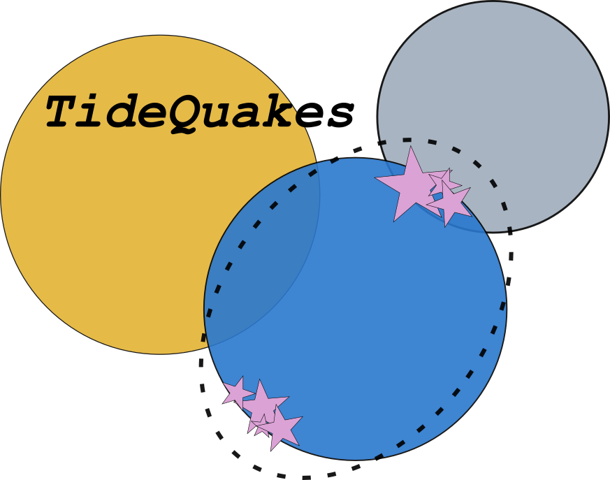

Bio
I am currently taking a leave from my position of associate research scientist at the Lamont-Doherty Earth Observatory
(LDEO) to pursue my research program at the Institut des Sciences de la Terre in Grenoble (ISTerre) under the sponsorship
of Choose France for Science!
I am a geophysicist using data and theory to understand Earth’s mechanisms. I focus my research on understanding the processes leading to the spatio-temporal localization of deformation within the crust. To investigate this, I study faults across a wide range of scales—from monitoring large fault zones over several decades (specifically before and after major earthquakes) to analyzing the elusive seismicity of stable continental regions and human-induced earthquakes related to geothermal energy extraction. My approach to discovery combines the creation of detailed earthquake catalogs via cutting-edge data-mining techniques—including deep learning and physics-based methods—with the development of novel analytical frameworks to provide new constraints on fault behavior and earthquake physics.
News and Recent Publications
TideQuakes Project

I am currently leading the TideQuakes project (2026-2029), funded by the program Choose France for Science, that aims to 1) improve our ability to observe the tidal modulation of seismicity, 2) better understand the physics of the phenomenon and 3) develop a fault monitoring framework that could help us understand the preparation phase of large earthquakes.
This study builds upon our previous work (Beaucé et al. 2023); it presents an original framework to observe and characterize the subtle response of faults to tidal stresses and applies it to the Ridgecrest region (California, USA) before and after the 2019 M7.1 earthquake. Our study provides new insights into fault mechanics and the physics of an elusive preparation phase, elevating the question for future research: Can we observe a similar phenomenon before other large earthquakes?
Bulletin of the Seismological Society of America · 2026
What is the temporal structure of seismic sequences and how can we relate its topology to the physical properties of the host fault system? This study proposes a new approach to characterize the complex temporal statistics of seismic sequences emerging from modern earthquake catalogs.
Geophysical Journal International · 2026
On the 5th of April 2024, a magnitude 4.8 earthquake struck near the New York metropolitan area. It was the first time in more than 100 years that an earthquake of that size occurred within 50 miles of New York City. We characterized in detail the aftershock sequence that unravelled to gain insights into the properties of faults that are capable of hosting moderate-size earthquakes in the troubling absence of measurable tectonic deformation, thereby posing significant risk to the nearby densely populated areas.
Geophysical Research Letters · 2025
View all publications
Curriculum Vitae
Click here to see my CV (last updated 2026-10-11).
Education
- 2021 Ph.D. Geophysics - Massachusetts Institute of Technology, USA
- 2018 M.Sc. Geophysics - Massachusetts Institute of Technology, USA
- 2016 M.Sc. Physics - Ecole Normale Supérieure de Lyon, France
- 2013 B.Sc. Physics - Ecole Normale Supérieure de Lyon, France
Research Interests
- Earthquake seismology
- Statistical seismology
- Tectonophysics
- Complex systems
- Signal processing
Other Websites
Contact Information
Check out this web page for up-to-date contact information: eric.beauce@univ-grenoble-alpes.fr
(I am still checking ebeauce@ldeo.columbia.edu)